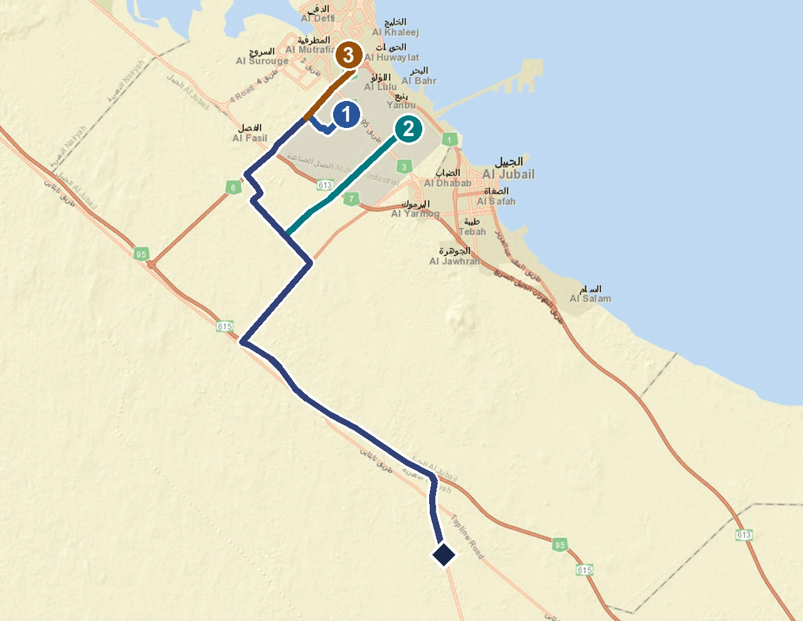

تقرير أولي · مستودع الجبيل المركزي
الملخص والتسلسل الزمني
المستودع والموقع
- إجمالي مساحة الموقع
- 52,900 م²
توزيع مساحة الموقع
- مجموع المساحات المحددة
- 9,800 م²المستودعات والطرق والمرافق
- بقية مساحة الموقع
- 43,100 م²
- المستودعات ووحدة التخزين
- 1,000 م² إجمالًا للمستودعين المغلقين ووحدة تخزين المولدات وخزان الديزل.
- الطرق الداخلية
- 8,000 م² للطرق بين مناطق التخزين.
- المكاتب والخدمات
- 800 م² إجمالًا لمكتب الأمن ومكتب موظفي المستودع ودورات المياه ووحدة خزانات المياه.
- حالة التنفيذ
- المستودعان تحت الإنشاء، وتم إلغاء المظلة.
- السور
- سور شبكي مغطى بصاج أو شنكو بطول يقارب 920 م.
موقع المستودع وتجهيزاته
يقع المستودع شمال الجبيل. تشمل تجهيزاته ثلاثة مولدات وخزاني ديزل، ويورد سجل الموقع 86 أصلاً. المصدر سجل المواد وعرض صيانة المولدات.
إجمالي مساحة الموقع من مخطط الردم. توزيع المساحات بحسب تحديث إدارة اللوجستيات والمستودعات.
خريطة المشاريع ومستودع الجبيل المركزي

الخريطة الأساسية © Esri ومساهموها · بيانات الطرق © مساهمو OpenStreetMap
المسافات ونطاقات القيادة من تقديرات Google Maps الواردة في المرجع ليوم 25 نوفمبر 2026، بتوقيت السعودية. تعرض روابط الاتجاهات تقدير وقت القيادة عند فتحها.
بيانات الحادثة
الخسارة التقديرية للمخزون
- القيمة التقديرية
- 154,750.40 ريال1,120 متر × 138.17 ريال للمتر
- الكمية المسروقة
- 45 لفة
- إجمالي طول شريط النحاس
- 1,120 متر
- بلاغ الشرطة
- مركز شرطة الجبيل البلد: د 1888457 وط 575016 (التقرير الأولي).
- سجل المواد
- الرصيد الدفتري قبل الفقد 2,470 م. سجل المواد
التسلسل الزمني للسرقة
الجمعة 20 نوفمبر 2026. الأوقات بحسب ساعة الكاميرا، والمدد تقريبية.
- 37 دقيقة تقريباً
- من أول ظهور لمركبة إلى الخروج09:36–10:13
- 30.5 دقيقة تقريباً
- من أول دخول مرصود لأشخاص إلى مغادرة المركبة09:43–10:13
أول ظهور لمركبة في التسجيلات
أول دخول مرصود لأشخاص إلى الموقع
الفاصل حتى دخول مركبة نحو 20 دقيقة.
دخول مركبة إلى الموقع
مغادرة المركبة وهي محمّلة
المدة من دخول المركبة حتى مغادرتها نحو 10.5 دقيقة.
تحديد مدة بقاء الأشخاص أو تأكيد دخول ثانٍ لهم يتطلب توثيقاً مستقلاً. ورُصد تغيّر في اتجاه إحدى الكاميرات أثناء الحادثة، والسبب قيد التحقق.
الفيديو المجمّع
20:34 دقيقة من تسجيلات الكاميرات، الوقت على الشاشة. تنزيل